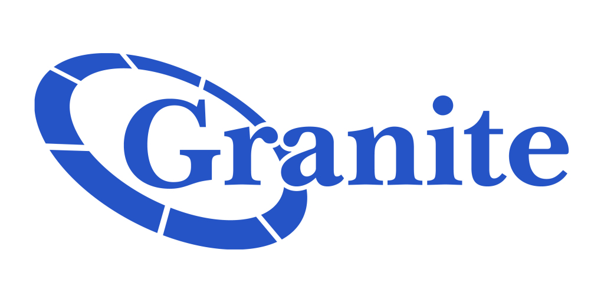

I am Kavin Shah
Transforming data into actionable insights with precision, collaboration and driving decisions across every function. With over 3 years of analytical experience, I specialize in data analysis, manipulation, wrangling, validation, and visualization to transform complex datasets into actionable insights. My strong cross-functional background and extensive stakeholder engagement enable me to drive informed decision-making across diverse teams.
Certifications
Certifying my Learning
IBM Data Science Professional Certificate
Coursera-IBM#1 It is 9 part specializtion course with a capstone project consisting from basics of Data Science to Analysis in Data Science to Machine Learning with Python.
Data Visualization Specialization with Tableau
Coursera-Tableau#2 It is a 5 part specialization course with a capstone project consisting from basics of visualization to effective story-telling.

Tableau Certified Desktop Specialist
Tableau#3 This certification helped me achieve the foundation required to apply visualizations in Tableau effectively.

Microsoft Certified-Data Analyst Associate
Udemy-Power BI#4 This certification helped me achieve the foundation required to apply visualizations in Power BI effectively.

Google Data Studio for Data Viz and Dashboard
Udemy-Google Data Studio#5 This certification helped me achieve the foundation required to apply visualizations in Google Data Studio effectively.
Recent
Projects
Academic and Individual Projects.
 Predictive-Digital-Marketing-Analytics-using-Machine-Learning
Predictive-Digital-Marketing-Analytics-using-Machine-LearningWork
Experience
Earned Experience
Added Value.
-
Homesite Insurance, Boston, MA
Data Analyst(Jan 23-Present) BI Associate(Jan 22-Jan 23)
•Streamlined Data Flow in GCP - Owned multiple data structures within Google Cloud Platform as a SME.
•Collaborated with Data Engineering and Data Governance teams to ensure smooth data flow, optimizing content delivery for end users.
•Spearheaded Migration of Critical Datasets to BigQuery - Demonstrated initiative by taking ownership of migrating critical datasets from SQL Server to BigQuery. This eliminated the manual process and resulted in a significant 95% reduction in processing time, expediting data availability for faster analysis and decision-making.
•Enhanced Data Accessibility with User-Centric Queries - Developed efficient SQL queries based on user feedback, significantly improving data accessibility and usability for analysts by 50%.
•Automated Looker Studio Reports to retire legacy tools for 75% Efficiency Gain - Automated multiple excel and SAS reports in Looker Studio, reducing analysis time for Product Analysts and State Managers by an average of 75%. This streamlined analysis and decision-making for data-driven strategy.
•Collaborated with Data Engineering to Build a Unified BI Dataset o Built Airflow pipelines to create a comprehensive BI Layer dataset, consolidating data from 4 operating companies.
o Standardized data definitions and metrics across all companies, ensuring data consistency and facilitating accurate analysis.
o Established a single source of truth for querying and generating dashboards, streamlining analytical process and data exploration for stakeholders. This significantly decreased the number of ad-hoc requests by 80% due to querying simplicity and resulted in a 35% reduction in analysis time for teams.
•Created Optimized and Comprehensive Looker Dashboards – Led the cross-functional initiative to build efficient and comprehensive dashboards in Looker. Utilized LookML to establish an efficient data structure, enabling data-driven strategy.
•Delivered High-Performance Dashboard for 10 billion Row Dataset - Successfully delivered a complex dashboard in Looker that conveyed a key metric from a massive dataset (10+ billion rows) with a sub-10 second response time using advanced sql concepts.
•Monitored Profitability Initiatives for $1 Billion Impact - Led multiple profitability-focused initiative monitoring projects, collaborating across teams to track initiatives targeting over $1 billion in increased profitability.
•Mentored multiple Co-ops & Ensured Project Success - Provided guidance on business and technical concepts, assisted with project management, and ensured successful project completion.
•Empowered users through "Snack and Learn" sessions - Equipping them with Looker Studio & BigQuery skills and introducing the concept of CTEs for query optimization. This resulted in a double win: a 15% reduction in ad-hoc requests due to user self-sufficiency, and a 20-40% decrease in analysis turnaround time.
-
Arizona Department of Education, Phoenix, AZ
Data Reporting Analyst
•Streamlined Data Reporting & Communication for Stakeholders o Owned the entire data reporting lifecycle for internal stakeholders (directors, chief of staff, superintendent). This included data collection, pre-processing, validation, and creating complex queries for insightful visualizations.
o Effectively communicated insights through compelling dashboards tailored for both technical and non-technical audiences.
•Automated Data Request Process & Improved Efficiency - Analyzed historical data requests to automate the data collection process, saving at least 50% of time across 4 teams. This streamlined content delivery and freed up valuable resources for further analysis.
•Optimized Reporting Queries for Faster Insights - Enhanced reporting queries in Power BI by leveraging advanced techniques. This resulted in a significant 15% reduction in wait time for ad-hoc reports, improving user experience for data consumers.
-
Northeastern University COE, Boston,MA
Data Assistant
• Designed a data warehouse and established connection with Power BI to decrease the overall processing time to generate reports by more than 50%.
• Collected data form programming survey Qualtrics and performed QA to maintain the quality of data.
• Reduced the issue rate resulting by ambiguous data by 90% by analysing the data and setting a set of pre-defined rules.
• Analysed the previous 5-year job posting data and created visualization in Power BI which directly impacted the outreach program and help our department Increase the job postings by 13%.
• Managed the bi-weekly data focus meeting with the internal stakeholders to answer any data related question and provide ad-hoc data reports in excel.
Northeastern University COE, Boston,MA
Graduate Teaching Assistant - Big Data Arch & Gov.
• Mentored students to take a purposeful approach on how to design, supervise and execute data directed projects and comprehend
the Big Data technology and architecture.
• Conducted sessions to help students develop and organize a data driven enterprise to comprehend complex nature of devising and
managing data-controlled projects.
-

Granite Telecommunications, Quincy,MA
Data Analyst Intern
• Performed Feature Engineering in Data Pipelining project that decreased communication time by 25% and increased the interaction rate 21%, resulting in revenue generation of ~$3 million.
• Automated the migration process from MsSQL to Hadoop by creating Python script that helped eliminate the manual process of migrating each table individually and save time.
• Architected metadata and wrote Stored Procedures in MsSQL to populate the website content dynamically by collaborating with cross-functional teams.
-
TeknoPoint, Mumbai,MH
Data Analyst
• Automated a report in Tableau for the sales team using filters, parameters and calculated sets that automatically qualified sales lead resulting in a lift in conversion rate of 20%.
• Responsible for maintaining the integrity of the Database and reporting any issues to the manager.
• Monitored expenses, sales and revenue; conducted weekly reports in Tableau and presented findings to executives, helping reduce 18% expenses and increase 11% sales over 12-month period.